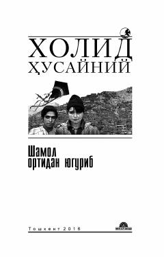

ШОAfg'onistonda o'tgan bolalik do'stligi, sodiqlik va kechirim izlash haqidagi ta'sirli roman.
Mazkur roman Afg'onistonda kechgan murakkab taqdirlar, bolalik do'stligi, xiyonat va vijdon azobi haqidadir. Asar bosh qahramon Amirning o'tmishdagi xatolarini tuzatish va o'zini oqlash uchun boshidan kechirgan sinovlarini hikoya qiladi. Kitob dunyoning ko'plab tillariga tarjima qilingan bo'lib, millionlab nusxada nashr etilgan.